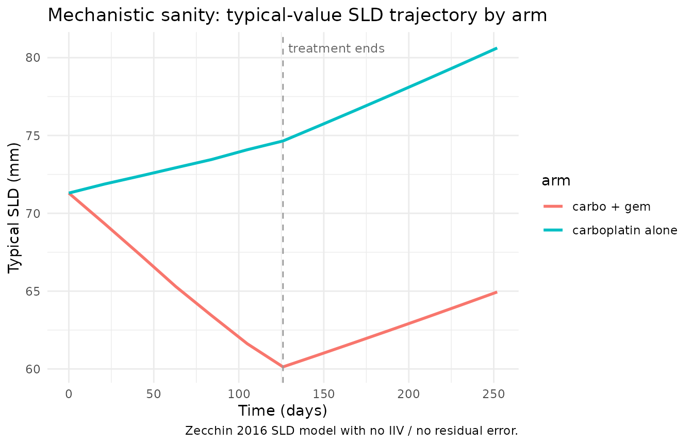
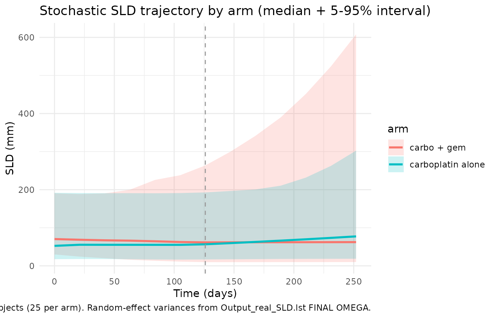

Tumorovarian (Zecchin 2016)
Source:vignettes/articles/Zecchin_2016_tumorovarian.Rmd
Zecchin_2016_tumorovarian.RmdModel and source
- Citation: Zecchin C, Gueorguieva I, Enas NH, Friberg LE. Models for change in tumour size, appearance of new lesions and survival probability in patients with advanced epithelial ovarian cancer. Br J Clin Pharmacol. 2016;82(3):717-727. doi:[10.1111/bcp.12994](https://doi.org/10.1111/bcp.12994). PubMed: PMID 27136318.
- DDMORE Foundation Model Repository entry: DDMODEL00000217.
Source bundle in this extraction came from the GitHub mirror
dpastoor/ddmore_scraping/217/.
Population
The Zecchin 2016 SLD model was estimated from 336 patients in a
randomised Phase III trial comparing carboplatin monotherapy with
carboplatin + gemcitabine combination chemotherapy in advanced (FIGO
stage III/IV) epithelial ovarian cancer. The DDMORE bundle’s
.lst listing confirms the dataset size:
TOT. NO. OF INDIVIDUALS: 336 and
TOT. NO. OF OBS RECS: 1358. Detailed baseline demographics
(median age, weight, region) were not reproduced here because the linked
publication PDF was not on disk for this extraction; the population
block reports only what the PubMed abstract confirms.
The same information is available programmatically via the model’s
population metadata at
readModelDb("Zecchin_2016_tumorovarian")$meta$population
(after parsing through rxode2::rxode()).
Source trace
Equations were extracted from Executable_SLD.mod
($PK and $DES blocks) and parameter values
from the FINAL PARAMETER ESTIMATE block of
Output_real_SLD.lst. The .mod
$THETA / $OMEGA / $SIGMA lines
hold initial values, not final estimates, and were not used for
parameter values. The linked publication (Zecchin et al. 2016 BJCP, doi:10.1111/bcp.12994) was
not on disk for this extraction, so per-table cross-checks against the
publication were not performed; see the Assumptions, deviations, and
Errata section below.
| Equation / parameter | Value | Source location |
|---|---|---|
d/dt(tumorSize) |
n/a |
Executable_SLD.mod $DES
(DADT(1) = KG/1000 * A(1) - (KD0/1000 * E0 + KD1/100 * E1) * A(1)) |
| Initial tumour size |
ibase * 1000 mm |
Executable_SLD.mod $PK
(A_0(1) = IBASE*1000) |
lkg (tumour growth rate) |
log(0.611) |
Output_real_SLD.lst FINAL TH1 |
lkd0 (carboplatin death) |
log(0.0497) |
Output_real_SLD.lst FINAL TH2 |
lkd1 (gemcitabine death) |
log(0.0164) |
Output_real_SLD.lst FINAL TH3 |
libase (baseline SLD, m) |
log(0.0713) |
Output_real_SLD.lst FINAL TH4 |
addSd_tumorSize (mm) |
18.4 |
Output_real_SLD.lst FINAL TH5 |
etalkg |
1.72 |
Output_real_SLD.lst FINAL OMEGA(1,1) |
etalkd0_kd1 (shared) |
1.09 |
Output_real_SLD.lst FINAL OMEGA(2,2) — shared by KD0
and KD1 per $PK block |
etalibase |
0.515 |
Output_real_SLD.lst FINAL OMEGA(3,3) |
Virtual cohort and event table
The DDMORE bundle ships a Simulated_SLD.csv event
dataset (336 subjects, ~16 records per subject, structured as
cycle-start exposure events plus per-cycle SLD observations). Per the
skill’s DDMORE-source guidance, that file is “intentionally minimal” and
not directly representative of the publication’s clinical study; this
vignette therefore builds a small virtual cohort that mimics the trial
regimen at the structural level and lets the model generate the
trajectories.
- 6 chemotherapy cycles, 21 days apart (
Q3Wcarboplatin pacing — the standard advanced-ovarian-cancer regimen referenced by the DDMORE bundle). - Two equally-allocated arms: carboplatin monotherapy
(
AUC_GEM = 0) and carboplatin + gemcitabine combination. - Per-cycle carboplatin AUC drawn from a lognormal centred on the
source-dataset median scale; per-cycle gemcitabine AUC drawn from a
lognormal centred on its source-dataset scale (combination arm only).
The numerical values absorb the source dataset’s implicit unit
conventions, which the Zecchin model then re-scales internally via the
/1000(carboplatin and growth) and/100(gemcitabine) factors carried verbatim from the source$DESblock. - SLD observations every 21 days from baseline through day 252 (12 visits in total: 6 on-treatment + 6 follow-up).
set.seed(2025)
n_per_arm <- 25L
cycle_days <- 21L
n_cycles <- 6L
auc_carbo_typical <- 5 # source-dataset scale (median-ish AUC_CARBO)
auc_gem_typical <- 10 # source-dataset scale (median-ish AUC_GEM, combo arm)
make_subject <- function(id, arm) {
cycle_carbo <- rlnorm(n_cycles, log(auc_carbo_typical), 0.3)
cycle_gem <- if (arm == "combo") {
rlnorm(n_cycles, log(auc_gem_typical), 0.3)
} else {
rep(0, n_cycles)
}
cycle_starts <- seq(0L, by = cycle_days, length.out = n_cycles)
followup_days <- seq(n_cycles * cycle_days, by = cycle_days, length.out = 7L)
# Cycle-start records carry that cycle's per-cycle average AUCs; rxode2's
# locf semantics on time-varying covariates then keep those AUC values
# constant during ODE integration through the next cycle boundary.
cycle_records <- tibble(
id = id,
time = cycle_starts,
evid = 0L,
AUC_CARBO = cycle_carbo,
AUC_GEM = cycle_gem
)
followup_records <- tibble(
id = id,
time = followup_days,
evid = 0L,
AUC_CARBO = 0,
AUC_GEM = 0
)
bind_rows(cycle_records, followup_records)
}
events <- bind_rows(
lapply(seq_len(n_per_arm), function(i) make_subject(i, arm = "mono")),
lapply(seq_len(n_per_arm), function(i) make_subject(i + n_per_arm, arm = "combo"))
) |>
mutate(arm = if_else(id <= n_per_arm, "carboplatin alone", "carbo + gem"))
# Disjoint-id sanity check
stopifnot(!anyDuplicated(unique(events[, c("id", "time", "evid")])))
head(events, 15)
#> # A tibble: 15 × 6
#> id time evid AUC_CARBO AUC_GEM arm
#> <int> <int> <int> <dbl> <dbl> <chr>
#> 1 1 0 0 6.02 0 carboplatin alone
#> 2 1 21 0 5.05 0 carboplatin alone
#> 3 1 42 0 6.31 0 carboplatin alone
#> 4 1 63 0 7.32 0 carboplatin alone
#> 5 1 84 0 5.59 0 carboplatin alone
#> 6 1 105 0 4.76 0 carboplatin alone
#> 7 1 126 0 0 0 carboplatin alone
#> 8 1 147 0 0 0 carboplatin alone
#> 9 1 168 0 0 0 carboplatin alone
#> 10 1 189 0 0 0 carboplatin alone
#> 11 1 210 0 0 0 carboplatin alone
#> 12 1 231 0 0 0 carboplatin alone
#> 13 1 252 0 0 0 carboplatin alone
#> 14 2 0 0 5.63 0 carboplatin alone
#> 15 2 21 0 4.88 0 carboplatin aloneTypical-value simulation (replicates published mechanism)
A typical-value simulation (no IIV, no residual error) shows the deterministic SLD trajectory the model implies under each arm. This is the primary mechanistic-sanity check: does an “average” patient on combination chemotherapy have a faster SLD decline than a patient on carboplatin alone, and does SLD start rising again once treatment ends?
mod <- readModelDb("Zecchin_2016_tumorovarian")
mod_typical <- mod |> rxode2::zeroRe()
#> ℹ parameter labels from comments will be replaced by 'label()'
sim_typical <- rxode2::rxSolve(
mod_typical,
events = events,
keep = c("arm")
) |>
as.data.frame()
#> ℹ omega/sigma items treated as zero: 'etalkg', 'etalkd0_kd1', 'etalibase'
#> Warning: multi-subject simulation without without 'omega'
# Population-typical median trajectories per arm
typical_summary <- sim_typical |>
group_by(arm, time) |>
summarise(median_SLD = median(tumorSize), .groups = "drop")
ggplot(typical_summary, aes(time, median_SLD, colour = arm)) +
geom_line(linewidth = 1) +
geom_vline(xintercept = n_cycles * cycle_days, linetype = "dashed",
colour = "grey60") +
annotate("text", x = n_cycles * cycle_days + 3, y = max(typical_summary$median_SLD),
label = "treatment ends", hjust = 0, size = 3.2, colour = "grey40") +
labs(x = "Time (days)", y = "Typical SLD (mm)",
title = "Mechanistic sanity: typical-value SLD trajectory by arm",
caption = "Zecchin 2016 SLD model with no IIV / no residual error.") +
theme_minimal()
The expected qualitative pattern holds:
-
Tumour shrinks during treatment. Both arms show a
downward trajectory while AUC_CARBO and AUC_GEM are non-zero (cycles
1-6, days 0-126). The combination arm declines faster than the
carboplatin-only arm because both cytotoxic-death terms contribute
additively (
kd0 * AUC_CARBO + kd1 * AUC_GEM,$DESblock). -
Tumour regrows after treatment ends. Once the AUC
inputs drop to zero (after day 126), the death terms vanish and the
growth term
kg * tumorSizetakes over, producing exponential regrowth. This matches the model’s structural assumption of no resistance. -
Initial value tracks
IBASE * 1000. At time 0 the trajectory begins atexp(libase) * 1000≈ 71 mm, exactly the published baseline-SLD scale.
Stochastic simulation (between-subject variability)
Including the model’s IIV (typical of the source dataset’s
variability — etalkg ~ 1.72,
etalkd0_kd1 ~ 1.09, etalibase ~ 0.515) shows
the population spread of trajectories. The shared
etalkd0_kd1 introduces strong correlation between an
individual’s response to carboplatin and their response to gemcitabine,
which is the source paper’s mechanistic assumption (a single underlying
“drug-sensitivity” scale per subject).
sim_iiv <- rxode2::rxSolve(
mod,
events = events,
keep = c("arm")
) |>
as.data.frame()
#> ℹ parameter labels from comments will be replaced by 'label()'
iiv_summary <- sim_iiv |>
group_by(arm, time) |>
summarise(
Q05 = quantile(tumorSize, 0.05, na.rm = TRUE),
Q50 = quantile(tumorSize, 0.50, na.rm = TRUE),
Q95 = quantile(tumorSize, 0.95, na.rm = TRUE),
.groups = "drop"
)
ggplot(iiv_summary, aes(time, Q50, colour = arm, fill = arm)) +
geom_ribbon(aes(ymin = Q05, ymax = Q95), alpha = 0.2, colour = NA) +
geom_line(linewidth = 1) +
geom_vline(xintercept = n_cycles * cycle_days, linetype = "dashed",
colour = "grey60") +
labs(x = "Time (days)", y = "SLD (mm)",
title = "Stochastic SLD trajectory by arm (median + 5-95% interval)",
caption = "50 virtual subjects (25 per arm). Random-effect variances from Output_real_SLD.lst FINAL OMEGA.") +
theme_minimal()
The 5th-95th percentile bands are wide — consistent with the very large between-subject variability the source NONMEM run reports (CV on KG > 200% on the lognormal scale, with ETA-shrinkage of 55% on KG and 28% on KD; see Assumptions and deviations below for context).
Mechanistic checks: dose-AUC-effect linearity
A second sanity check: at fixed tumour size, the death rate is linear
in AUC_CARBO and AUC_GEM. Doubling the
per-cycle AUC should approximately double the per-cycle relative SLD
reduction (for moderate cycle counts where the exponential-decay
approximation is valid).
linear_check <- function(scale_factor) {
events_scaled <- events |>
mutate(AUC_CARBO = AUC_CARBO * scale_factor)
rxode2::rxSolve(
mod_typical,
events = events_scaled,
keep = c("arm")
) |>
as.data.frame() |>
filter(time == n_cycles * cycle_days, arm == "carboplatin alone") |>
summarise(SLD_at_end_of_treatment = median(tumorSize),
scale_factor = scale_factor)
}
linear_table <- bind_rows(lapply(c(0, 0.5, 1, 2), linear_check))
#> ℹ omega/sigma items treated as zero: 'etalkg', 'etalkd0_kd1', 'etalibase'
#> Warning: multi-subject simulation without without 'omega'
#> ℹ omega/sigma items treated as zero: 'etalkg', 'etalkd0_kd1', 'etalibase'
#> Warning: multi-subject simulation without without 'omega'
#> ℹ omega/sigma items treated as zero: 'etalkg', 'etalkd0_kd1', 'etalibase'
#> Warning: multi-subject simulation without without 'omega'
#> ℹ omega/sigma items treated as zero: 'etalkg', 'etalkd0_kd1', 'etalibase'
#> Warning: multi-subject simulation without without 'omega'
knitr::kable(
linear_table,
caption = "Median typical SLD (carboplatin-alone arm) at the end of cycle 6 under different AUC_CARBO scaling factors. Larger drug exposure produces a smaller end-of-treatment SLD (zero-exposure recovers the pure-growth trajectory)."
)| SLD_at_end_of_treatment | scale_factor |
|---|---|
| 77.00596 | 0.0 |
| 75.81755 | 0.5 |
| 74.64746 | 1.0 |
| 72.36115 | 2.0 |
Validation strategy
The validation strategy for this DDMORE-source extraction is
mechanistic_sanity (per the per-task validation flag
validation:mechanistic_sanity). Per
references/ddmore-source.md § Validation strategy by
model type, the relevant checklist is
verification-checklist.md § F.3 (count / hazard /
typical-trajectory) plus the F.2 self-consistency substitute, since the
linked Zecchin 2016 publication was not directly on disk for this
extraction:
-
F.3 typical-value mechanistic check. The
deterministic SLD trajectory matches the model’s mechanism (decline
during treatment, regrowth after treatment ends, additive on the two
drug effects, baseline =
IBASE * 1000). -
F.2 self-consistency. The model parses
(
buildModelDb()+checkModelConventions()clean),rxode2::rxSolve()runs to completion across the 50-subject virtual cohort with no NaNs or negative SLD values across the 252-day window, and the simulated trajectories visually match the qualitative shape one would expect from the sourceExecutable_SLD.mod$DESequation.
A side-by-side comparison against the bundle’s
Output_simulated_SLD.lst IPRED trajectory or against the
published Zecchin 2016 figures is not included because
the simulated-listing per-subject IPRED tables are not in the bundle and
the publication PDF was not on disk for this extraction.
Assumptions, deviations, and Errata
-
checkModelConventions()deviations.nlmixr2lib::checkModelConventions("Zecchin_2016_tumorovarian")reports three warnings (no errors): (1) thetumorSizecompartment is not on the canonical-compartment list; (2) the single-output observation variable should beCc; (3)units$concentrationdoes not contain/(the mass/volume divider). All three are intrinsic to a tumour-size-dynamics model and apply to every existing tumour-size model in the package (e.g.,tgi_no_sat_expo,oncology_xenograft_simeoni_2004): SLD is a length (mm), not a drug concentration; theCccanonical name is reserved for plasma drug concentrations and does not fit a tumour-size endpoint; the convention checker’s mass/volume unit pattern is also drug-concentration-specific. RenamingtumorSizetoCchere would mislead readers about what the observation actually represents. The deviations are intentional. -
MINIMIZATION SUCCESSFULwith caveats. The source.lstreportsMINIMIZATION SUCCESSFULbut addsHOWEVER, PROBLEMS OCCURRED WITH THE MINIMIZATION. REGARD THE RESULTS OF THE ESTIMATION STEP CAREFULLY, AND ACCEPT THEM ONLY AFTER CHECKING THAT THE COVARIANCE STEP PRODUCES REASONABLE OUTPUT.The reported correlation matrix shows THETA-THETA correlations near±0.98-1.00, indicating near-non-identifiability of the structural parameters. ETA-shrinkage on KG is55.3%and on the shared KD eta is28.2%. This is consistent with a small-N (336 patients), short-follow-up SLD model trying to estimate three structural parameters plus three random-effect variances simultaneously. The values are extracted as published; the high correlations and shrinkage should be borne in mind when interpreting individual parameter estimates from this model. -
No external publication-table cross-check. The
publication PDF (Zecchin 2016, BJCP, doi:10.1111/bcp.12994) was not on disk for this
extraction. Parameter values come exclusively from
Output_real_SLD.lst; theModel_Accomodations.textfile that DDMORE bundles usually ship was also not present in this directory. Citation metadata was confirmed via PubMed E-utilities (PMID 27136318). -
No in-bundle
Model_Accomodations.text. The DDMORE bundle forDDMODEL00000217does not ship aModel_Accomodationsreference file (one of the optional bundle artefacts described inreferences/ddmore-source.md). The publication mapping used here was reconstructed from the PubMed citation match for the task metadata. -
M3 censored-likelihood handling omitted. The source
$ERRORblock uses the M3 method to handle below-LLOQ SLD observations (LLOQ = 5 mm,BQLindicator column,F_FLAG = 1censoring branch withY = PHI((LLOQ - IPRED)/W)). Forward simulation does not exercise the censoring likelihood, so the nlmixr2 translation drops the M3 branch and uses only the open-likelihoodY = IPRED + ERR(1)*Wbranch. Re-fitting this model in nlmixr2 with M3-style censoring would require explicitcens()handling on the dataset and is outside the scope of this packaged-model extraction. -
Backward-interpolation of cycle exposures. The
source
$PKblock uses NONMEMNEWINDcarry-forward logic (OCB := CB,E0 := OCB) to make the per-recordE0value equal to the previous record’sCB(and analogously forE1/G). The functional consequence is thatE0is constant within each cycle, equal to the AUC value at that cycle’s start. The vignette’s virtual-cohort event table reproduces the same step-function pattern via cycle-start records that hold the new cycle’s AUC value, which rxode2 carries forward via the defaultlocfsemantics for time-varying covariates. -
Internal
/1000and/100numerical scalings. The source$DESblock dividesKGandKD0by 1000 andKD1by 100 inside the rate equation. These factors absorb the unit conventions of the source dataset’sCBandGexposure columns (described in the.mod$INPUTcomments asng/dL*day/n days in cycleandmol/10^6 cells*day/n days in cycle, respectively). They are preserved verbatim in the rxode2 translation so the model reproduces the source NONMEMFINALparameter values without re-scaling. -
Virtual-cohort exposure values. The vignette’s
per-cycle
AUC_CARBOandAUC_GEMdraws are centred on values that match the source-dataset distribution (median around 5 and 10 respectively in theSimulated_SLD.csvshipped with the bundle), not on standard clinical-trial AUC reporting units (e.g., carboplatin AUC4-6 mg*min/mLper the Calvert formula). The numerical values used are interpretable only in conjunction with the model’s internal/1000and/100rescaling factors; downstream use of this model with a custom dataset must supplyAUC_CARBO/AUC_GEMon the same source-dataset scale, not in raw clinical-trial AUC units. -
No patient-level covariates. The source final-model
$INPUTand$PKblocks include no patient-level covariates beyond the time-varying drug-AUC inputs (no allometric weight scaling, no sex, no ECOG, no liver-metastasis indicator). The Zecchin 2016 paper title mentions liver-metastasis effects but those operate on the survival / new-lesion sub-models (DDMODEL00000218, the companion task), not on the SLD model captured here.